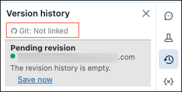
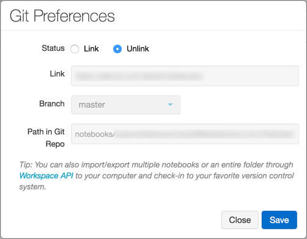
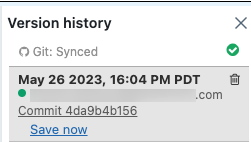
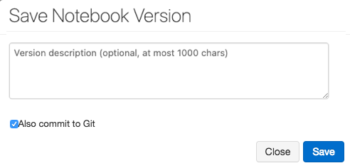
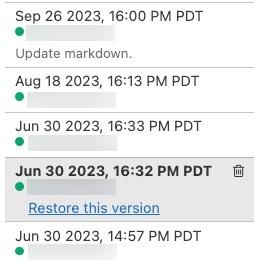
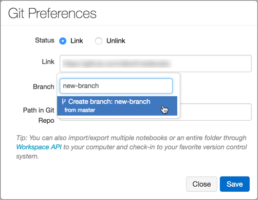
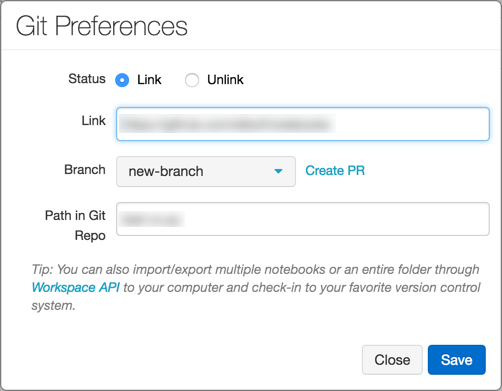

Git version control for notebooks (legacy)
Important
Important: Legacy notebook Git integration support will be removed on January 31st, 2024. Databricks recommends that you use Databricks Repos to sync your work in Databricks with a remote Git repository.
This article describes how to set up Git version control for notebooks (legacy feature). You can also use the Databricks CLI or Workspace API to import and export notebooks and to perform Git operations in your local development environment.
Enable and disable Git versioning
By default version control is enabled. To toggle this setting:
Go to Admin settings > Workspace settings.
In the Advanced section, deselect the Notebook Git Versioning toggle.
Configure version control
To configure version control, create access credentials in your Git provider, then add those credentials to Databricks.
Work with notebook versions
You work with notebook versions in the history panel. Open the history panel by clicking  in the right sidebar.
in the right sidebar.
Note
You cannot modify a notebook while the history panel is open.
Link a notebook to GitHub
Click
in the right sidebar. The Git status bar displays Git: Not linked.Click Git: Not linked.
The Git Preferences dialog appears. The first time you open your notebook, the Status is Unlink, because the notebook is not in GitHub.
In the Status field, click Link.
In the Link field, paste the URL of the GitHub repository.
Click the Branch drop-down and select a branch or type the name of a new branch.
In the Path in Git Repo field, specify where in the repository to store your file.
Python notebooks have the suggested default file extension
.py. If you use.ipynb, your notebook will save in iPython notebook format. If the file already exists on GitHub, you can directly copy and paste the URL of the file.Click Save to finish linking your notebook. If this file did not previously exist, a prompt with the option Save this file to your GitHub repo displays.
Type a message and click Save.
Save a notebook to GitHub
While the changes that you make to your notebook are saved automatically to the Databricks version history, changes do not automatically persist to GitHub.
Click
in the right sidebar to open the history panel.Click Save Now to save your notebook to GitHub. The Save Notebook Version dialog appears.
Optionally, enter a message to describe your change.
Make sure that Also commit to Git is selected.
Click Save.
Revert or update a notebook to a version from GitHub
Once you link a notebook, Databricks syncs your history with Git every time you re-open the history panel. Versions that sync to Git have commit hashes as part of the entry.
Click
in the right sidebar to open the history panel.Choose an entry in the history panel. Databricks displays that version.
Click Restore this version.
Click Confirm to confirm that you want to restore that version.
Use branches
You can work on any branch of your repository and create new branches inside Databricks.
Create a branch
Click
in the right sidebar to open the history panel.Click the Git status bar to open the GitHub panel.
Click the Branch dropdown.
Enter a branch name.
Select the Create Branch option at the bottom of the dropdown. The parent branch is indicated. You always branch from your current selected branch.
Create a pull request
Click
in the right sidebar to open the history panel.Click the Git status bar to open the GitHub panel.
Click Create PR. GitHub opens to a pull request page for the branch.
Rebase a branch
You can also rebase your branch inside Databricks. The Rebase link displays if new commits are available in the parent branch. Only rebasing on top of the default branch of the parent repository is supported.
For example, assume that you are working on databricks/reference-apps. You fork it into your own account (for example, brkyvz) and start working on a branch called my-branch. If a new update is pushed to databricks:master, then the Rebase button displays, and you will be able to pull the changes into your branch brkyvz:my-branch.
Rebasing works a little differently in Databricks. Assume the following branch structure:
After a rebase, the branch structure looks like:
What’s different here is that Commits C5 and C6 do not apply on top of C4. They appear as local changes in your notebook. Merge conflicts show up as follows:
You can then commit to GitHub once again using the Save Now button.
What happens if someone branched off from my branch that I just rebased?
If your branch (for example, branch-a) was the base for another branch (branch-b), and you rebase, you need not worry! Once a user also rebases branch-b, everything will work out. The best practice in this situation is to use separate branches for separate notebooks.
Best practices for code reviews
Databricks supports Git branching.
You can link a notebook to any branch in a repository. Databricks recommends using a separate branch for each notebook.
During development, you can link a notebook to a fork of a repository or to a non-default branch in the main repository. To integrate your changes upstream, you can use the Create PR link in the Git Preferences dialog in Databricks to create a GitHub pull request. The Create PR link displays only if you’re not working on the default branch of the parent repository.
Troubleshooting
If you receive errors related to syncing GitHub history, verify the following:
You can only link a notebook to an initialized Git repository that isn’t empty. Test the URL in a web browser.
The GitHub personal access token must be active.
To use a private GitHub repository, you must have permission to read the repository.
If a notebook is linked to a GitHub branch that is renamed, the change is not automatically reflected in Databricks. You must re-link the notebook to the branch manually.